Scroll horizontally
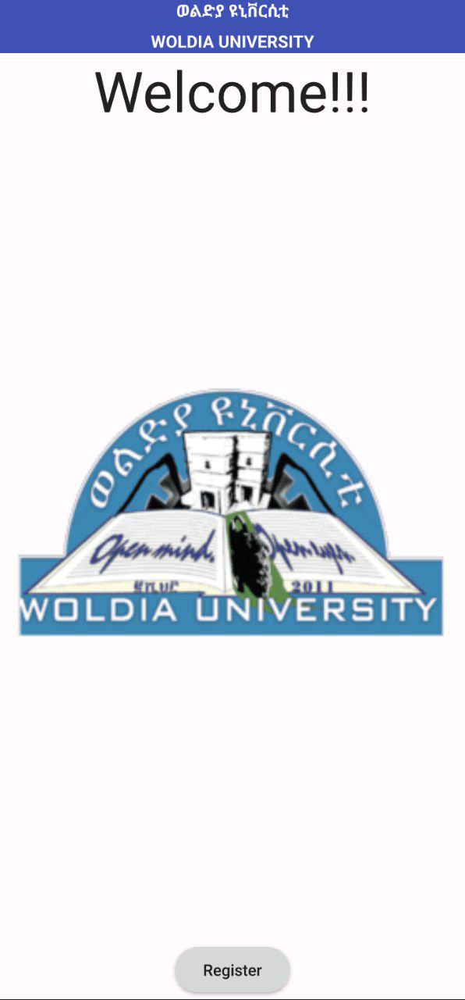
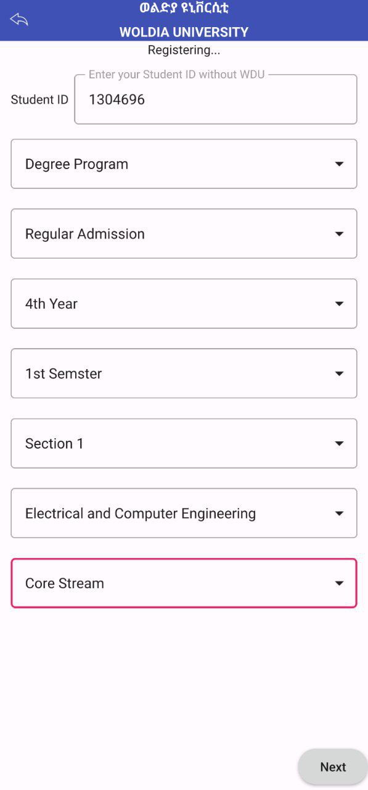
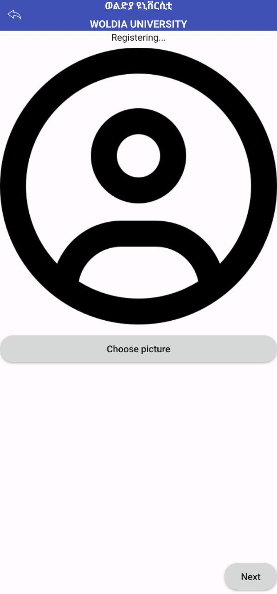
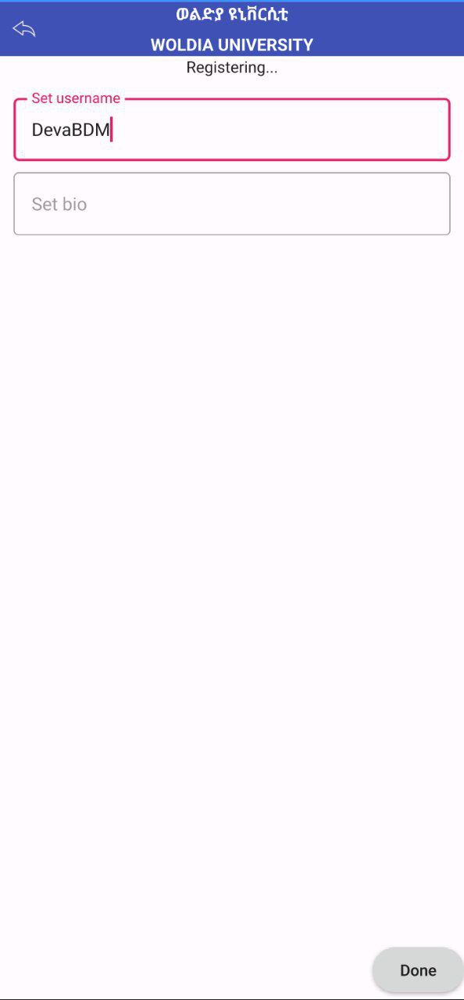
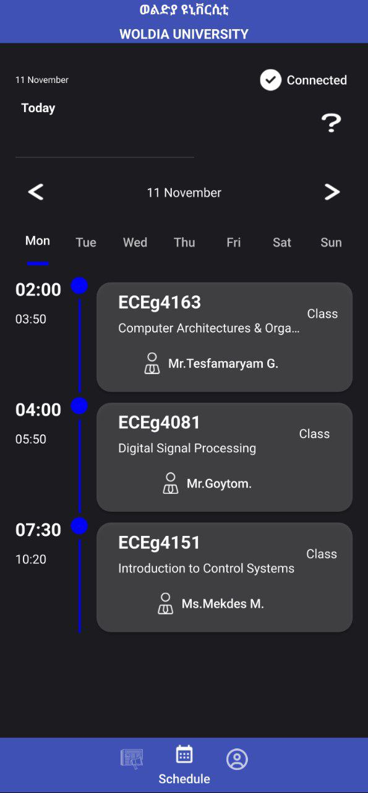
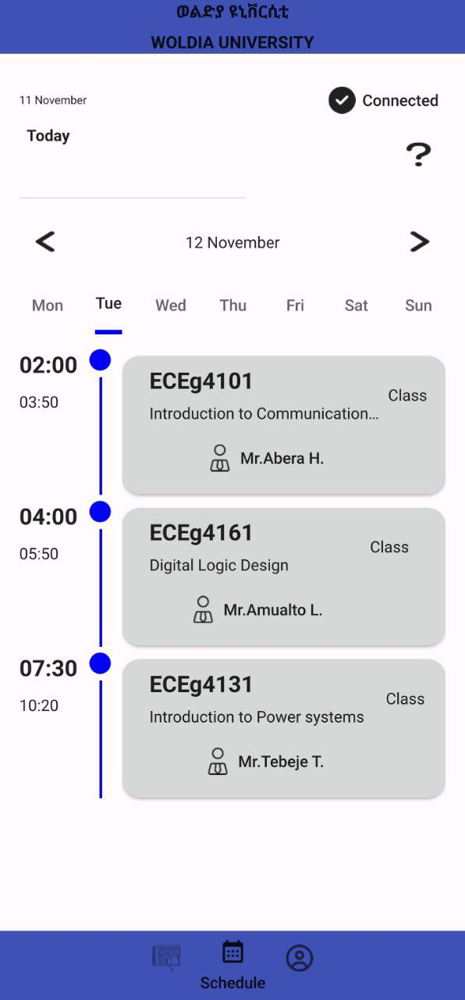
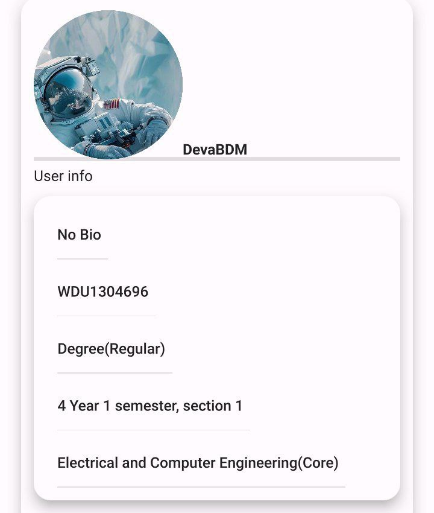
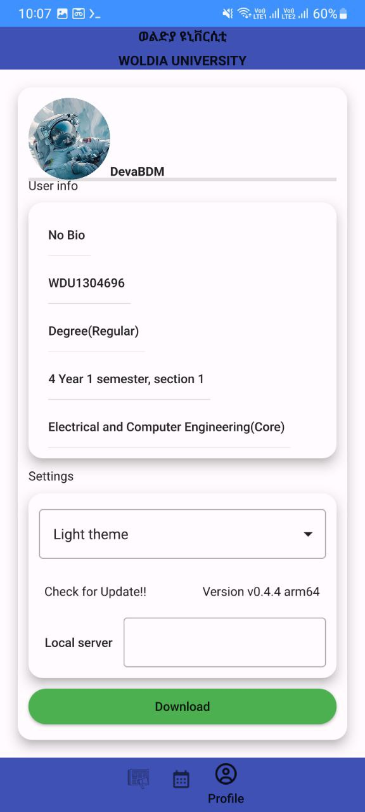
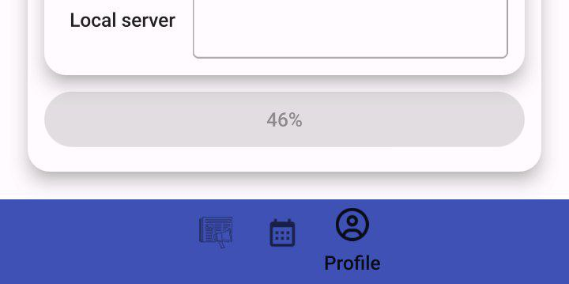
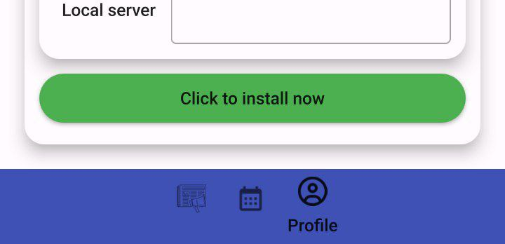
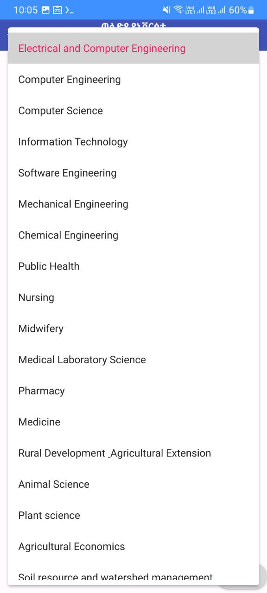
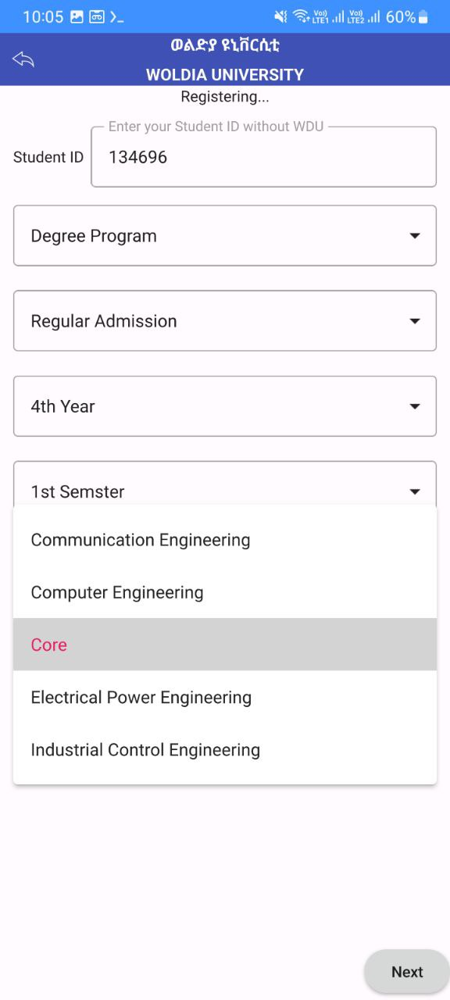
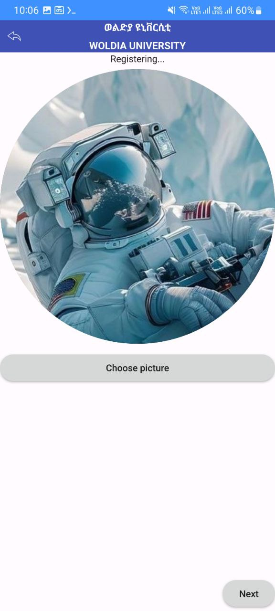
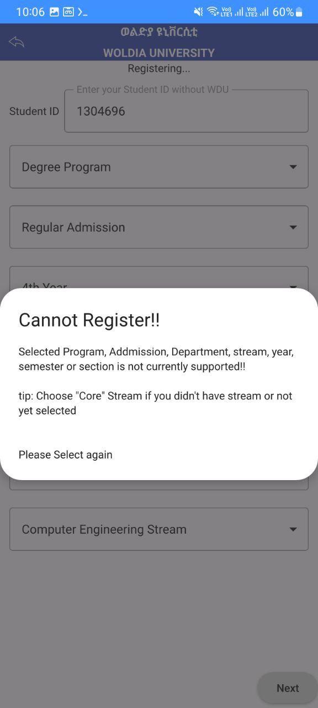
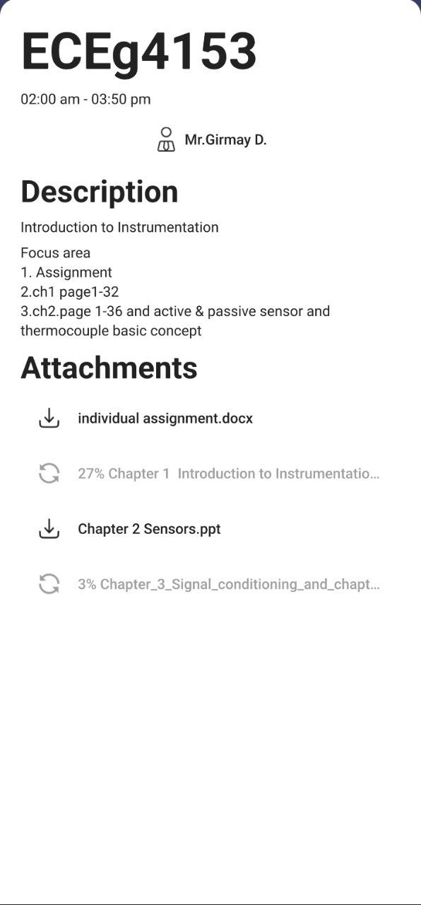
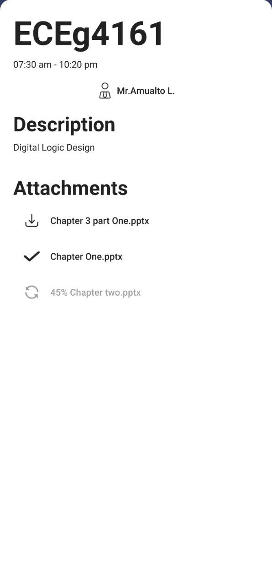
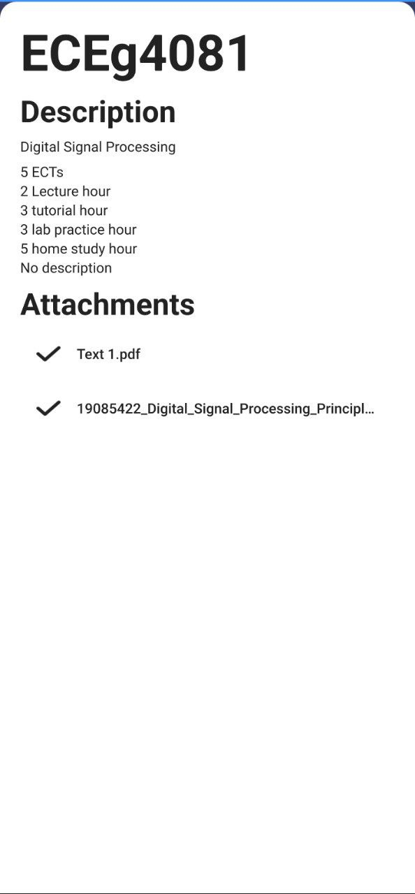
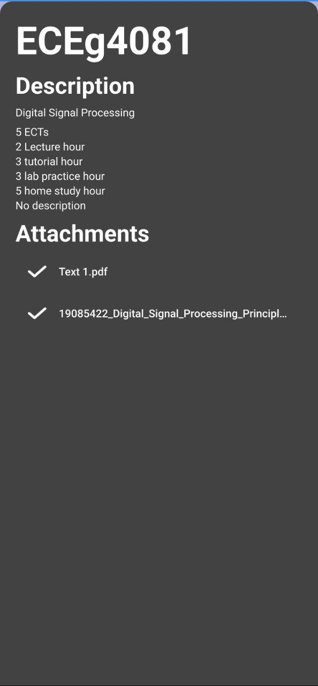
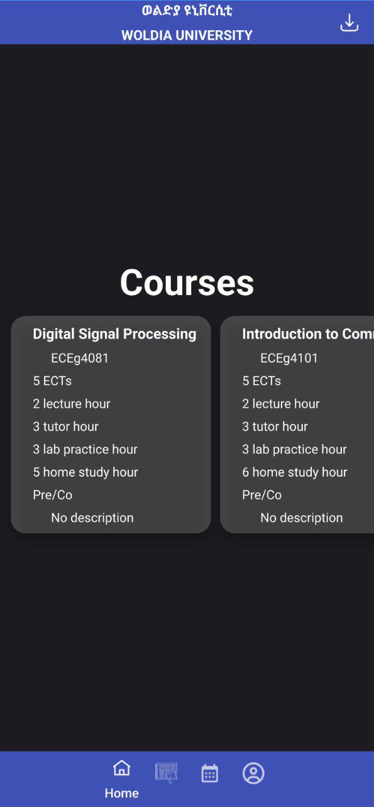
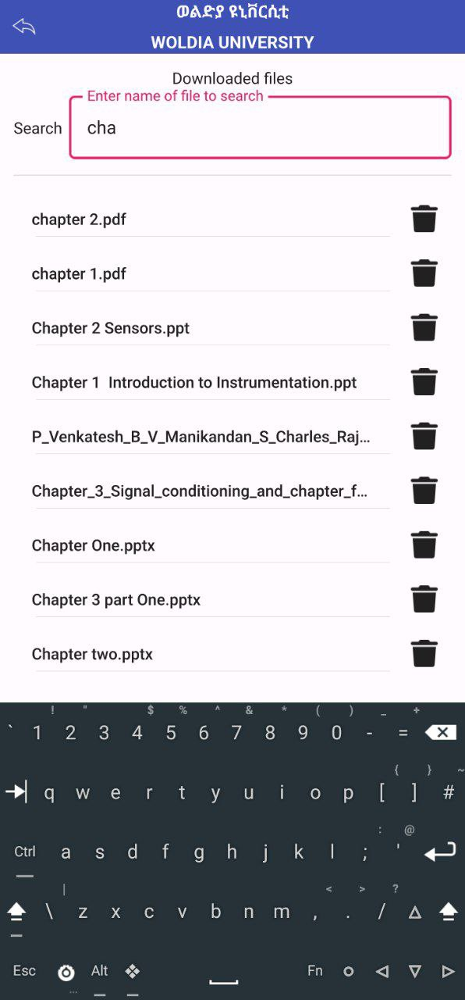
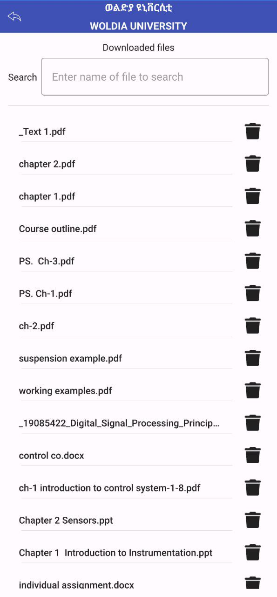
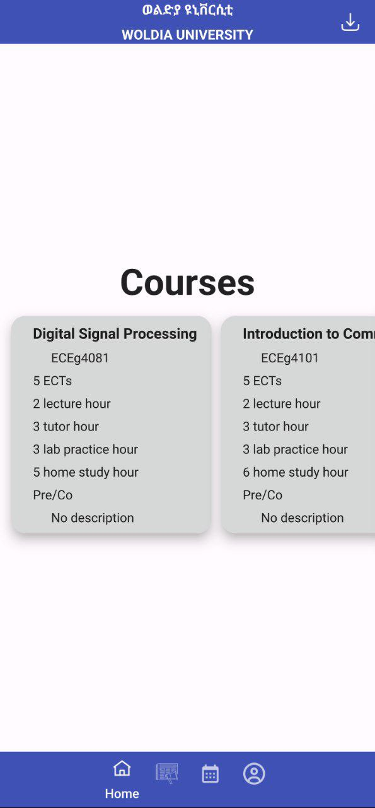
University Platform
WLDU App
A Windows and Android platform I developed for student registration, scheduling, university news, and department operations. This system is currently under evaluation for wider university use.